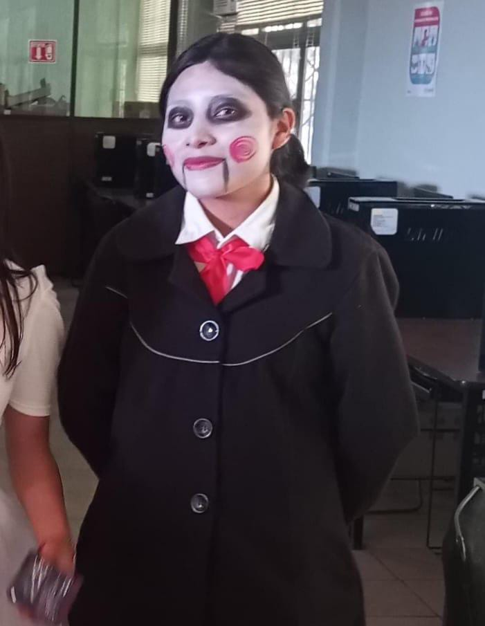

Descripción breve
Jigsaw es un personaje inspirado en la clásica estética de muñecos inquietantes: maquillaje pálido, detalles oscuros alrededor de los ojos y gestos serios. La idea fue recrear la apariencia icónica adaptada al vestuario disponible.
- Categoría: Terror clásico / Fantasía
- Detalles del vestuario: saco negro, camisa blanca, moño rojo en el cuello, pantalón de vestir.
- Maquillaje: base blanca en la cara con los detalles característicos (ojos oscuros, líneas en la boca si aplica).
Declaración de cumplimiento
Declaro que el vestuario y los accesorios respetan las normas de seguridad del evento y no incluyen elementos peligrosos ni ofensivos. Me comprometo a seguir las reglas de respeto y convivencia.
Inspiración / Idea
La inspiración proviene del arquetipo del muñeco inquietante y películas clásicas de terror; se buscó mantener la esencia usando prendas formales y maquillaje llamativo.